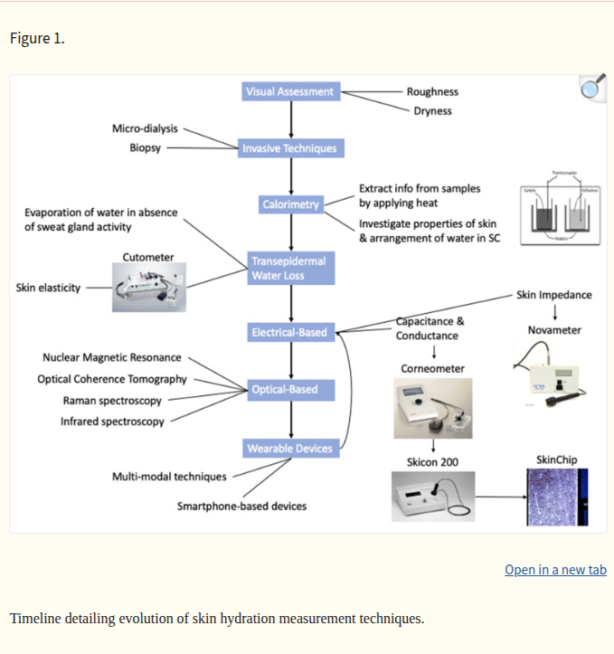

Questões frequentes
Problema
Que problema este projeto procura resolver?
Evitar desidratações em todos os grupos etários e minimizar os impactos ambientais do consumo excessivo de água, tal como a produção e transporte de garrafas de plástico.
Porque razão este problema é relevante hoje em dia?
A OMS recomenda cerca de 2L de água por dia. Todavia, um estudo conjunto da iniciativa Liq.In7 concluiu que mais de metade da população não atinge a ingestão média de fluidos recomendada para a sua faixa etária. Estudos mostram ainda que níveis insuficientes de hidratação estão associados a menor desempenho físico, desempenho cognitivo reduzido, mau humor, problemas renais e maior risco de morte precoce.
No mercado português, foram produzidas 911 milhões de embalagens de plástico para comercialização de água engarrafada, sendo que cada garrafa possui uma pegada de carbono de 85 g CO2. Entre 2014 e 2019, o consumo per capita aumentou cerca de 30%.
Soluções existentes
Que outras soluções semelhantes existem?
Alguns estudos mostram que o nível de hidratação da pele pode prever desidratações sistémicas leves com exatidão, refletindo o volume do fluido intersticial dérmico e água retida na matriz extracelular, que se encontram em equilíbrio com o plasma. Alterações no volume plasmático e osmolalidade influenciam a microcirculação e produzem variações mensuráveis na hidratação cutânea. Assim, medições locais da pele podem correlacionar-se com indicadores sistémicos.
O dispositivo mais comum para avaliar hidratação cutânea é o corneómetro, que mede propriedades elétricas da pele (bioimpedância). Outros métodos incluem sensoriamento ótico utilizando LEDs em 970 nm e 1450 nm, elasticidade da pele e calor específico.1

Existem também sensores multimodais mais precisos que combinam bioimpedância tetrapolar e sensoriamento ótico, mitigando erros de contacto e aumentando a sensibilidade das medições.2
O que distingue o nosso protótipo das soluções semelhantes existentes
- Relacionamos medidas de hidratação cutânea com o estado sistémico
- Informamos a população sobre este problema de saúde pública
- Monitorizamos continuamente os níveis de hidratação
- Utilizamos sensor multimodal (elétrico + ótico)
- Planeamos medir elasticidade da pele
- Possível uso de bioimpedância tetrapolar
- Consideramos LED de 1450 nm para complementar o de 970 nm
- Possível componente termodinâmica adicional
Protótipo
Como funciona o protótipo escolhido
O protótipo inicial usa um Arduino NANO BLE, um sensor bipolar Grove GSR, um LED IR de 970 nm e um fotodíodo. Os elétrodos são colocados nos dedos 3 e 4 e a pulseira recolhe medições em contínuo.
Quais são as principais funcionalidades
O protótipo liga-se a uma aplicação móvel que comunica com o utilizador e permite melhorar continuamente o modelo.
Que melhorias poderiam ser introduzidas
Reduzir as dimensões da pulseira e torná-la mais resistente.
Relatório científico submetido para o Concurso Nacional para Jovens Cientistas e Investigadores
Notas de rodapé
- Gidado, I. M., Qassem, M., Triantis, I. F., & Kyriacou, P. A. (2022). Review of advances in the measurement of skin hydration based on sensing of optical and electrical tissue properties. Sensors, 22(19), 7151. https://doi.org/10.3390/s22197151 (PMCID: PMC9571519)
- Gidado, I. M., Nwokoye, I. I., Triantis, I. F., Qassem, M., & Kyriacou, P. A. (2024). Multi‑Modal Spectroscopic Assessment of Skin Hydration. Sensors, 24(5), 1419. https://doi.org/10.3390/s24051419